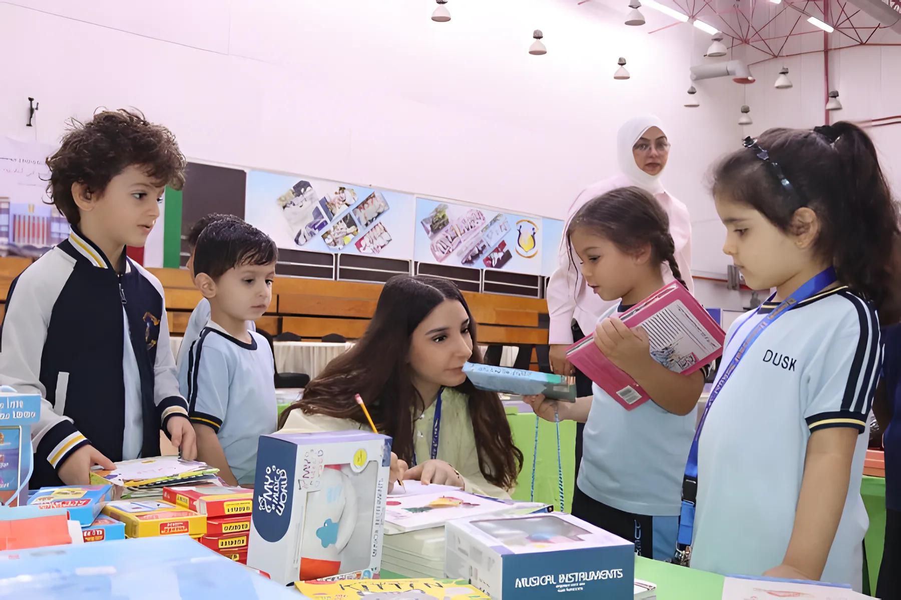

What your child studies at DUSK, how we grade and report, and the services around the school day: the bus, the clinic and the uniform.

Curriculum
DUSK is an American school. We follow the Common Core State Standards (CCSS) for literacy and mathematics and the Next Generation Science Standards (NGSS) for science. English is the language of instruction.
Arabic is part of the Language Arts and follows Ministry of Education guidelines, together with Islamic studies. French is taught as a foreign language. Students also take Emotional Intelligence, Visual and Creative Arts, IT, Music, Robotics and Physical Education.
Teachers email parents during the year whenever there's something to discuss, and formal progress reports go home four times a year. From Grade 2 to Grade 12 we use letter grades.
F is 59% and below for English subjects, and 49% and below for Arabic subjects, as set by the Ministry.
Letter grades used at DUSK, Grade 2 to Grade 12
Grade
Percentage
Grade
Percentage
A+
97–100
C+
77–79
A
93–96
C
73–76
A−
90–92
C−
70–72
B+
87–89
D+
67–69
B
83–86
D
63–66
B−
80–82
D−
60–62
Extra credit classes
Sixteen extra credit subjects alongside the main curriculum.
Psychology
Physics
Chemistry
Biology
Env. Science
Geometry
Algebra 2
Commerce
Banking
Life Skills
Creative Arts
English
Arabic
Social Science
Geography
History
MAP testing
NWEA MAP Growth is a computer-adaptive test: each question depends on the answer before. We use it for English Reading and Language Use in Grades 9 to 11, in a fall and a winter session, so teachers can see what each student is ready to learn next.
Edunation, the parent portal
Every family gets a login, sent by email with a parent's guide.
Students from Grade 4 to 12 can stand for the Student Council; representatives are chosen at the start of each year. The Parent Council is a volunteer committee of parents that works with the school and speaks for families.
Facilities
Indoor gym and auditorium25 m poolSports groundsRobotics labMusic room
25-metre swimming pool
Indoor gym and auditorium
Two semi-covered sports grounds and recess areas
Lunch canteens for elementary, middle and high school
Robotics lab, and three IT labs (elementary, middle, high)
Our buses collect students from outside their homes in the morning and bring them back after school, in Salwa and the neighbouring areas. To arrange it, contact the Transport Manager through the office with your address and your home on a map.
One room, one bed, oxygen for emergencies. The nurses give first aid, look after students with health conditions or medication, check height, weight, teeth and vision every year, and give the Kuwait Government vaccinations to Years 5, 6 and 12.
One uniform from KG1 to Grade 12: light blue shirt with the DUSK logo and dark blue trousers or skirt; a PE kit; and for winter a navy pullover, a half jacket and the blue blazer.